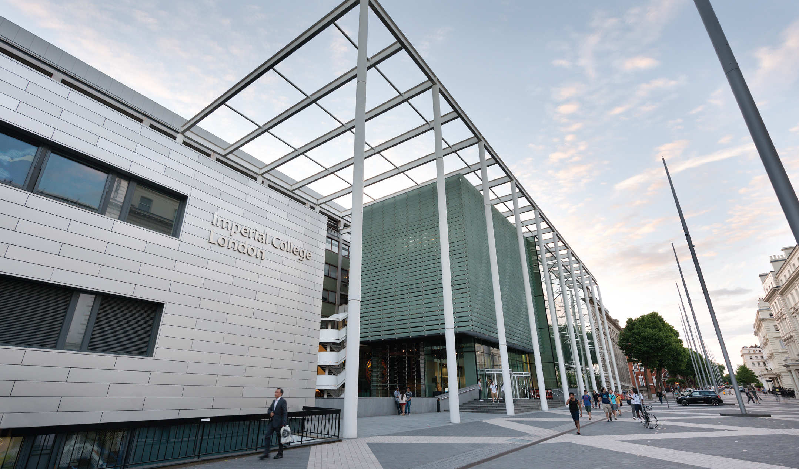

traditionnelle Fish and Chips.
Le Royaume-Uni possède aussi un système d'éducation semi-public très étendu et développé. L'éducation au Royaume-Uni est une question décentralisée, chaque pays (Angleterre, Pays de Galles, Écosse et Irlande du Nord) ayant un système éducatif distinct.
Si l'on considère les quatre systèmes réunis, environ 38% de la population du Royaume-Uni possède un diplôme universitaire, ce qui représente le pourcentage le plus élevé en Europe et parmi les pourcentages les plus élevés au monde. Le Royaume-Uni ne suit que les États-Unis en matière de représentation sur les listes des 100 meilleures universités.
Dans le 2018 Times Higher Education World University Rankings, il y a 12 universités britanniques dans le top 100, dont 3 dans le top 10: Université d'Oxford (première), Université de Cambridge (deuxième) et Imperial College London (huitième). De même, dans le Classement mondial des universités QS de 2019, il y a 18 universités britanniques parmi les 100 premières dont 4 dans le top 10: Université d'Oxford (cinquième), Université de Cambridge (sixième), Imperial College London (huitième) et University College London (dixième).
Selon The Complete University Guide, l'université britannique la plus sélective est l'Université de Cambridge avec un tarif UCAS moyen de 226, suivie de l'Imperial College London avec un tarif UCAS moyen de 219. En troisième position, l'Université d'Oxford est 217. Le tarif UCAS mesure la note obtenue à l'examen de fin du cycle secondaire, et valable pour n'importe quel système éducatif dans le monde reconnu dont le baccalauréat français.
Un rapport d'une commission gouvernementale en 2014 a révélé que les personnes éduquées représentent 7% de la population générale du Royaume-Uni mais des pourcentages beaucoup plus élevés des professions les plus élevées, le cas le plus extrême étant 71% des juges.
Le pays forme un grand nombre de scientifiques et d'ingénieurs. On attribue aux Britanniques des découvertes scientifiques telles que l'hydrogène, l'oxygène, la gravité, les électrons, la structure moléculaire de l'ADN, la sélection naturelle, et des inventions comme la télévision, le vélo moderne, l'ordinateur. Le Royaume-Uni fut aussi le premier pays à introduire la radio publique en continu, un système de transport public par rails et un réseau de radar civil et militaire entièrement opérationnel.
Parmi les scientifiques britanniques les plus importants, du xviie siècle et du siècle des Lumières jusqu'à nos jours, se trouvent tout d'abord Francis Bacon et Robert Boyle, fondateurs de la méthode expérimentale et des conceptions modernes de la science. Sir Isaac Newton, figure majeure de l'histoire des sciences, est le fondateur de la mécanique classique et l'auteur de découvertes fondamentales sur la gravitation, ainsi que de principes de l'optique.
Au xixe siècle, Charles Darwin révolutionne la biologie en développant la théorie de l'évolution, et contribue également à la géologie. À la même période, Ada Lovelace est une pionnière de la science informatique. Au xxe siècle, Rosalind Franklin, pionnière de la biologie moléculaire, découvre la structure de l'ADN. Le mathématicien et cryptologue Alan Turing est le fondateur de la science moderne de l'informatique. À sa suite, Sir Tim Berners-Lee est l'inventeur du World Wide Web.
Stephen Hawking contribue aux domaines de la cosmologie et de la gravité quantique, mais aussi à la vulgarisation scientifique. Son collègue Sir Roger Penrose -prix Nobel de physique 2020- et lui développent les théorèmes sur les singularités dans le cadre de leurs recherches sur les origines de l'univers. Dans un tout autre domaine, Jane Goodall transforme profondément le champ de l'éthologie, c'est-à-dire la compréhension humaine des comportements animaux.
Vingt-huit Britanniques ont remporté le prix Nobel de physique, dont Peter Higgs en 2013 pour sa découverte du boson de Higgs ; vingt-neuf le prix Nobel de chimie, dont Ernest Rutherford, le père de la physique nucléaire ; et trente le prix Nobel de physiologie ou médecine, dont Alexander Fleming pour la découverte de la pénicilline.
Les pays composant le royaume ont donné de grands et remarquables écrivains et poètes. William Shakespeare, qui a écrit de nombreuses pièces de théâtre, est considéré comme le plus grand auteur de langue anglaise (on parle de « la langue de Shakespeare » à propos de l'anglais).
On note parmi les auteurs anglais Geoffrey Chaucer (1343-1400), William Shakespeare (1564-1616), Samuel Taylor Coleridge (1772-1834), Jane Austen (1775-1817), Percy Bysshe Shelley (1792-1822), John Keats (1795-1821), William Makepeace Thackeray (1811-1863), Charles Dickens (1812-1870), la fratrie Brontë, George Eliot (1819-1880), Lewis Carroll (1832-1898), Robert Muchamore, Anthony Trollope, George Meredith, George Orwell, Aldous Huxley, William Wordsworth, Alfred Tennyson, Robert Browning, Elizabeth Barrett Browning, Mary Shelley, Dame Agatha Christie, T. S. Eliot, Virginia Woolf, Wilfred Owen, J. K. Rowling, J. R. R. Tolkien, Ian Fleming et Douglas Adams.
Parmi les auteurs du pays de Galles, d'Écosse et d'Irlande du Nord, on peut citer Robert Burns, Dylan Thomas, Walter Scott, Arthur Conan Doyle, Robert Louis Stevenson, Iain Banks, Muriel Spark, Irvine Welsh, Ken Follett, C. S. Lewis ou encore Colin Bateman.
Le pays compte plusieurs orchestres de renommée internationale, tels l'Orchestre symphonique de la BBC, l'Orchestre philharmonique de Londres, l'Orchestre philharmonique royal et surtout l'Orchestre symphonique de Londres, conduit par Valery Gergiev.
Le pays a énormément contribué au développement de la musique rock, particulièrement durant les années 1960, 1970 et première moitié des années 1980. Plus précisément, la pop/pop rock (The Beatles, Cliff Richard, Rod Stewart, Phil Collins, Chris Rea, Sting, Sade (groupe), le rhythm and blues (The Animals, Manfred Mann) le rock 'n' roll (The Shadows, The Rolling Stones, The Who), le rock psychédélique (Barclay James Harvest) le blues rock (The Yardbirds, Eric Clapton, Jeff Beck), le folk rock (Cat Stevens, Donovan, Fairport Convention), le garage rock (The Kinks), le hard rock (Led Zeppelin, Deep Purple), le glam rock (Queen, David Bowie, T Rex), le boogie rock (Status Quo), le rock progressif (Pink Floyd, Genesis, Yes, Electric Light Orchestra, Emerson, Lake and Palmer, The Moody Blues, Kate Bush, King Crimson, Supertramp, Jethro Tull, Procol Harum, Gentle Giant, Camel), le heavy metal (Black Sabbath, Judas Priest, Motörhead puis la New wave of British heavy metal (Iron Maiden, Saxon, Def Leppard)), le punk rock (Sex Pistols, The Clash) et la new wave (The Police, Talk Talk, Depeche Mode, Erasure, The Cure, Tears for Fears, Simple Minds).
Plus récemment, le Royaume-Uni a contribué à l'expansion de genres tels que le rock alternatif, la techno, la house music, le metalcore, la musique électronique, la pop moderne, le RnB contemporain ainsi que d'autres. Parmi les artistes britanniques récents les plus connus, il y a Babyshambles, Arctic Monkeys, Muse, Coldplay, Blur, Oasis, The Libertines, Jamiroquai, Radiohead, les Spice Girls, Mika, Elton John, Adele, Little Mix, The Vamps, Union J, le groupe One Direction ou encore Amy Winehouse.
Les règles actuelles du football, du rugby, du hockey, du bandy, du shinty, du cricket, du rounders, du stoolball, du polo, du water-polo, du netball, de la boxe, du golf, du tennis, du tennis de table, du badminton, du squash et d'autres ont été codifiées au Royaume-Uni.
Le sport le plus populaire est le football. À l'exception des tournois olympiques, le Royaume-Uni ne joue pas en tant que pays, chaque nation possède sa propre équipe : pays de Galles, Écosse, Irlande du Nord, Angleterre. On note de nombreux clubs renommés tels que Manchester United, Liverpool, Chelsea, Arsenal, et Newcastle United pour l'Angleterre; le Celtic et les Rangers pour l'Écosse.
La plupart des équipes du Royaume-Uni se nomment « équipe de Grande-Bretagne », comme l'Équipe de Grande-Bretagne de Coupe Davis ou l'Équipe de Grande-Bretagne de basket-ball.
En cyclisme, le vainqueur du Tour de France 2012 est le Britannique Bradley Wiggins, et le vainqueur des Tours de France 2013, 2015, 2016 et 2017 est le Britannique Christopher Froome. Il a également remporté la Vuelta 2017 et le Giro 2018. Geraint Thomas ayant remporté le Tour de France 2018 et Simon Yates ayant gagné la Vuelta 2018, le Royaume-Uni devient la première nation à remporter les trois grands tours la même année avec trois coureurs différents.
Au départ on remarque une présence typique de viande de bœuf, d'agneau, de poulet et de mouton dans l'ensemble de la cuisine du Royaume-Uni. Ainsi des plats comme l'agneau à la menthe ou le haggis font partie de la culture culinaire.
À cela il faut ajouter la présence d'ingrédients comme l'abat, la pomme de terre en purée ou nature. La dinde traditionnelle des fêtes, l'Irish stew et le bangers and mash sont tous des plats très prisés qui comportent des pommes de terre. L'oignon est également largement utilisé.
La cuisine de type pub est de plus en plus prisée, notamment à Londres, de même que le poisson qui, sous la forme de fish and chips est populaire dans tout le pays.
Enfin, le vin du Kent, le whisky et la bière ferment la boucle de la gastronomie du Royaume-Uni.
L'Université d'Oxford.
L'Imperial College London.
isaac Newton.
William Shakespeare.
Orchestre symphonique de Londres
Equipe de football de Manchester United.
traditionnelle Fish and Chips.